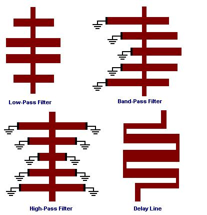

Structure
This tool is to simulate frequency response of planar (microstrip, strip-line, etc) structures composed from vertical and horizontal
transmission lines connected to each other (See Figure 1).

Figure 1: Examples of planar structures
Type of Lines
Two type of lines are used here:
1. A connection line, the "node", is a line of smaller width. It is used for input/output and interconnections.
2. A resonator line, the "stub", is a line of larger width. It is used to create resonance effects.
Type of Boundaries
The both lines can have either open or shorted sides. Type of boundary of each side must be specified.
Interconnections
The structure starts from a node and ends to a node. The first and the last nodes are input and output ports.
Each node can be only connected to a stub. The coordinate of lower position of the node must be greater than the lower coordinate of the stub,
i.e. yi,0=>yi+1,0 yi+2,0=>yi+1,0 (See Figure 2).
The coordinate of upper position of the node must be less than the upper coordinate of the stub,
i.e. yi,1<=yi+1,1 and yi+2,1<=yi+1,1.

Figure 2: Structure fragment.
Layout File
Each line contains three integer numbers and three rational numbers in subsequence
Ind I0 I1 L Y0 Y1
Where
Ind is optimization/synthesis number not used here.
I0 is left boundary index (I0=0 if open or I0=1 if shorted)
I1 is right boundary index (I1=0 if open or I1=1 if shorted)
L is vertical length of node/stub.
Y0 is coordinate of left side of node/stub
Y1 is coordinate of right side of node/stub